Chapter 29: The Extremists and the Swadeshi Movement (1905-11)
Swadeshi's revolutionary strand inspired Ghadar; the Delhi Conspiracy Case 1912 was the model deed
| Year | Paper | Topic | Answer |
|---|---|---|---|
| 1998 | Prelims | (Prelims 1998) | (B) Lala Hardayal |
| 2005 | Prelims | (Prelims 2005) | (C) A navalship on voyage to Canada |
| 2005 | Prelims | (Prelims 2005) | (B) North America |
| 2014 | Prelims | (Prelims 2014) | (A) a revolutionary association of Indians with headquarters at San Francisco |
| 2022 | Prelims | (Prelims 2022) | (D) 3 only |
Ghadar = a secular, republican, diaspora revolt (1913-15) that fell to intelligence, sepoy indifference and emergency law.
Read it like a film first. Then go to the notes: every fact below is expanded there.
Story spine: Punjabi NRIs in the US and Canada were shut out by racist rules, so they turned to revolution, inspired by the Swadeshi revolutionaries. They built a press campaign abroad (Free Hindustan, Swadesh Sevak, The Ghadr) and a party in San Francisco in 1913, guided by Lala Hardayal's anarchist ideas. The Komagata Maru humiliation and the outbreak of WWI gave them the trigger and the opening, so they planned three plots with German help: a Punjab mutiny, a Pacific arms shipment, and a Christmas Day rising. British intelligence and the Defence of India Act crushed all three, but the martyrs, from Bagha Jatin to Kartar Singh Sarabha, inspired the next generation.
| Character | Role in the story | Hook |
|---|---|---|
| Lala Hardayal | Professor of Sanskrit and Indian philosophy in San Francisco; ideologue; set up The Ghadr; Bakunin Institute 1912 | The brain |
| Sohan Singh Bhakna | 1st President of the Ghadar Party (1913) | The President, not Hardayal |
| Tarak Nath Das | Free Hindustan (1907), Vancouver; exposed the Fiji-plantation irony | Vancouver pen |
| G.D. Kumar | Swadesh Sevak (Gurmukhi weekly), Canada, 1909; asked troops to revolt | Gurmukhi weekly |
| Baba Gurdit Singh | Chartered the Komagata Maru from Hong Kong, 1914 | Ship charterer |
| Hardinge 10-16 | Viceroy targeted in the Delhi Conspiracy Case 1912 | The target |
| Rash Behari Bose | Operated in Lahore for the Punjab mutiny (21 Feb 1915); escaped to Japan in May 1915 | Lahore link |
| Bagha Jatin (Jatindranath Mukherjee) | Reorganised Jugantar in Bengal; masterminded Christmas Day plot; fell at Balasore | The Tiger |
| Shrish Chandra Mitra | Rodda employee, insider of the heist; fled, never captured | Insider |
| Haridas Datta | Disguised as a bullock-cart driver; took the 7th cart | 7th cart |
| Michael Bakunin (1814-76) | Russian founder of anarchism; destroy the State | Destroy to create |
| Kartar Singh Sarabha | Arrested and hanged Nov 1915 at 19; Bhagat Singh kept his photograph | Youngest martyr |
| B.K. Ghosh | Set up the Jugantar Party 1906; younger brother of Aurobindo Ghosh | Jugantar founder |
| Key term | In plain words |
|---|---|
| Ghadar / Ghadr | Revolt or mutiny; a deliberate invocation of 1857 |
| Yugantar Ashram | Ghadar Party HQ in San Francisco; same word as the Bengal secret society |
| Propaganda of the Deed | Anarchist idea: violent acts and mutiny awaken the masses better than words |
| Anarchism | Belief that the State is oppression and must be destroyed, not reformed |
| Direct journey rule | Canada's rule (1908): only Indians sailing straight from India could enter |
| Komagata Maru | Japanese ship chartered by Baba Gurdit Singh to test Canada's rule |
| Shore Committee | Set up at Vancouver (May 1914) to fight for the passengers' rights |
| Hindu-German Conspiracy | WWI plan (Zimmermann Plan): German Foreign Office funds and arms Indian revolutionaries |
| Mauser C96 | Broomhandle pistol with a wooden holster that turns it into a short carbine |
| Rodda & Co. | British-owned Calcutta gunsmith and arms dealer; target of the Aug 1914 heist |
| Defence of India Act 1915 | Wartime emergency law: detention without trial, special tribunals, no appeal |
| First Lahore Conspiracy Case | Mass trial of captured Ghadarites, Apr to Sept 1915 |
| Udasi Sikh Mahants | Influential Gurudwara priests who were pro-British |
| Peel Commission | Post-1857 army commission that deliberately reduced political consciousness among sepoys |
| Ghadr Di Goonj | Poems in The Ghadr on patriotism and unity of all religions |
Remember it as Press abroad, return home, three plots with German arms, all crushed by intelligence and the Defence of India Act, but the martyrs lived on.
| Year and paper | What was asked | Answer and the teacher's mark | Where |
|---|---|---|---|
| Prelims 1998 | Who was the leader of the Ghadar Party? | (b) Lala Hardayal. The Ghadr weekly was his; Bhakna was 1st President (board: President is not Hardayal), so read 'leader' as the moving spirit. | Section 3 |
| Prelims 2005 | What was Komagata Maru? | (c) A naval ship on voyage to Canada. Chartered by Baba Gurdit Singh from Hong Kong; 376 passengers. | Section 6 |
| Prelims 2005 | Where were the Ghadar revolutionaries, active at the outbreak of WWI, based? | (b) North America. HQ Yugantar Ashram, San Francisco. | Section 11 |
| Prelims 2014 | The Ghadr (Ghadar) was a ... | (a) a revolutionary association of Indians with HQ at San Francisco. | Section 11 |
| Prelims 2022 | Who were actively associated with the Ghadar Party? 1. Barindra Kumar Ghosh 2. Jogesh Chandra Chatterjee 3. Rash Behari Bose | (d) 3 only. RB Bose worked in Lahore; Jogesh Chatterjee belongs to the 1920s HRA/HSRA (Kakori 1925); Barindra Ghosh belongs to the Bengal samiti network. | Section 10 |
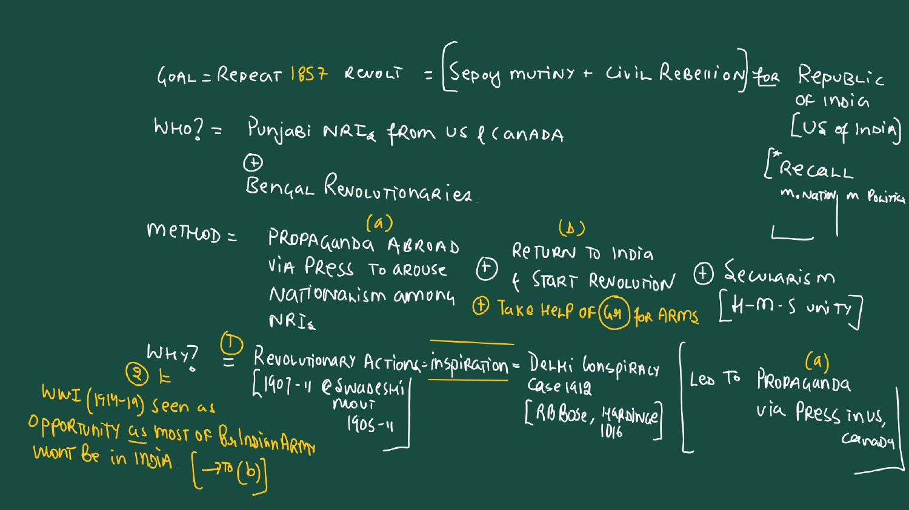
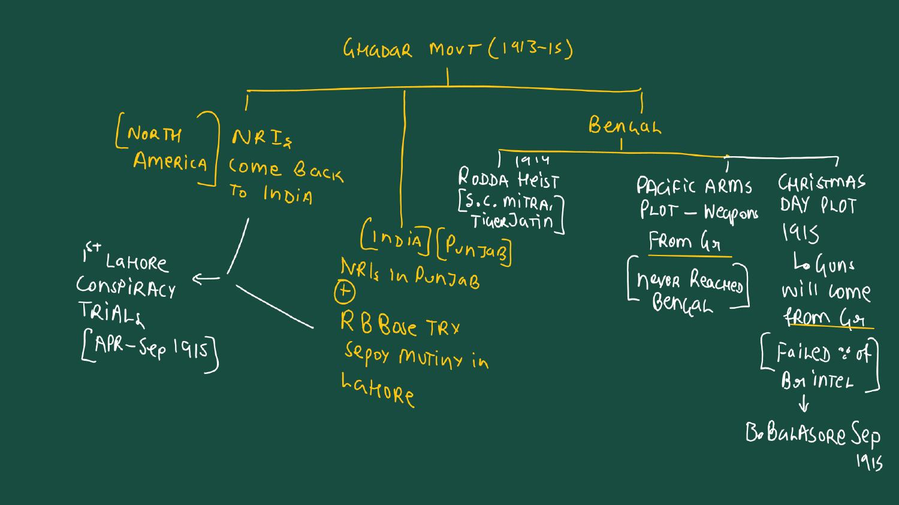
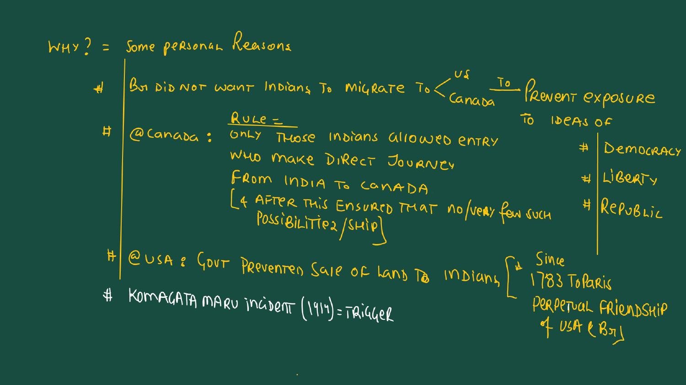
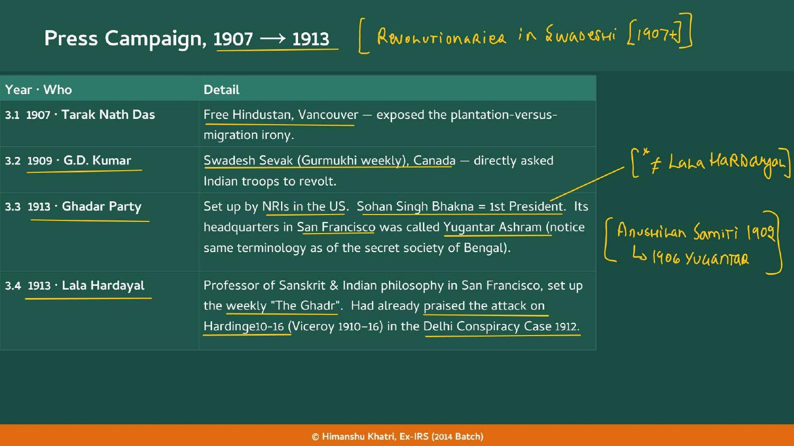
| Year | Who and what |
|---|---|
| 1907 | Tarak Nath Das, Free Hindustan, Vancouver; exposed the plantation-versus-migration irony |
| 1909 | G.D. Kumar, Swadesh Sevak (Gurmukhi weekly), Canada; directly asked Indian troops to revolt |
| 1913 | Ghadar Party set up by NRIs in the US; Sohan Singh Bhakna = 1st President. HQ in San Francisco = Yugantar Ashram (same terminology as the secret society of Bengal) |
| 1913 | Lala Hardayal, professor of Sanskrit and Indian philosophy in San Francisco, set up the weekly The Ghadr. He had already praised the attack on Hardinge 10-16 (Viceroy 1910-16) in the Delhi Conspiracy Case 1912 |
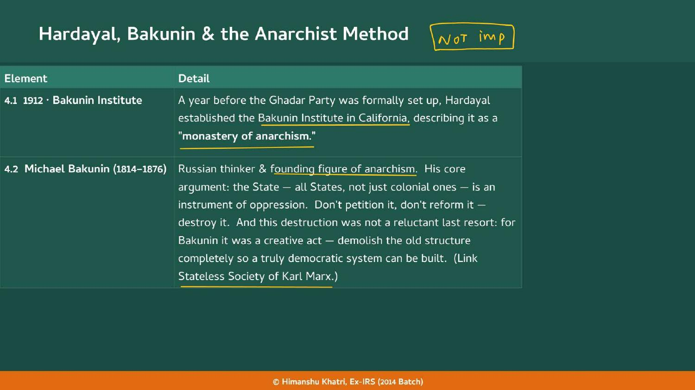
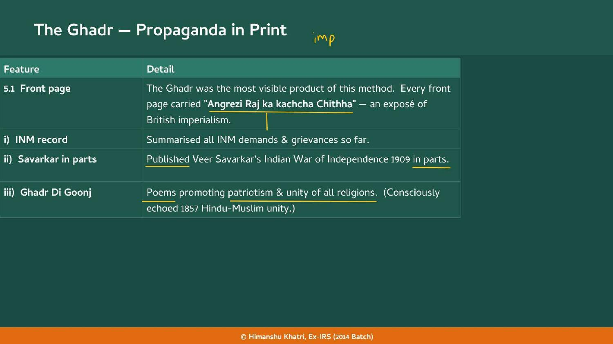
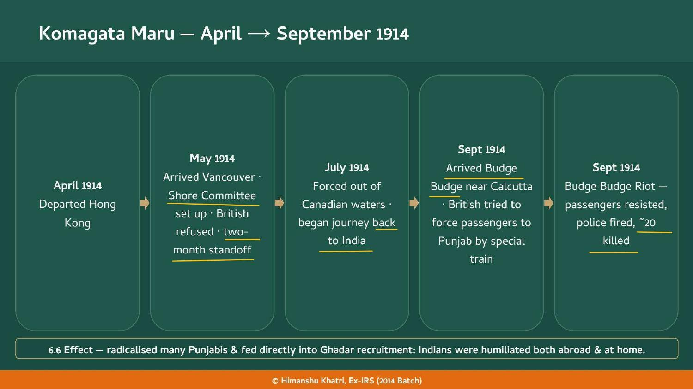
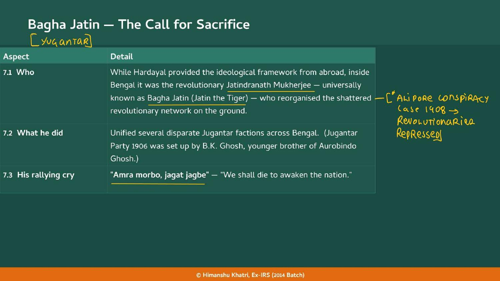
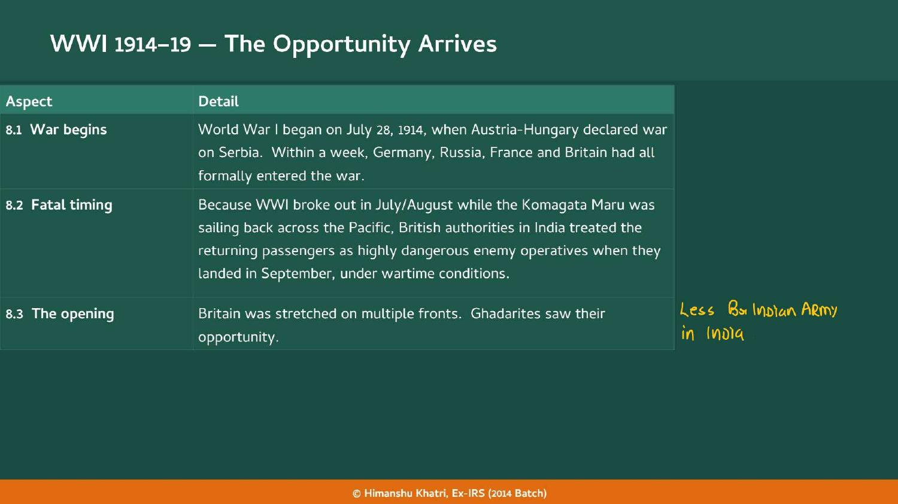
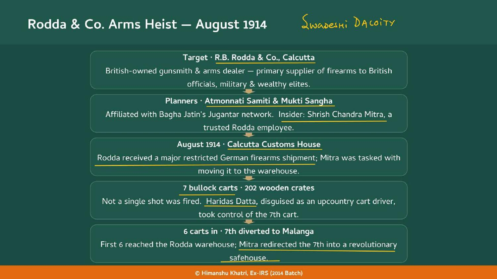
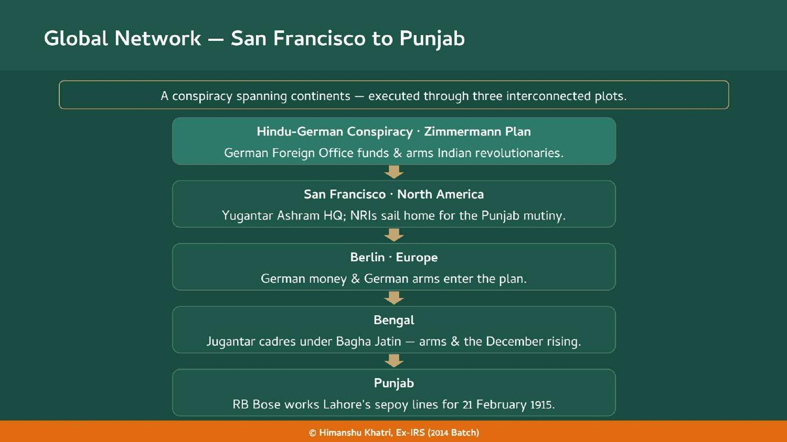
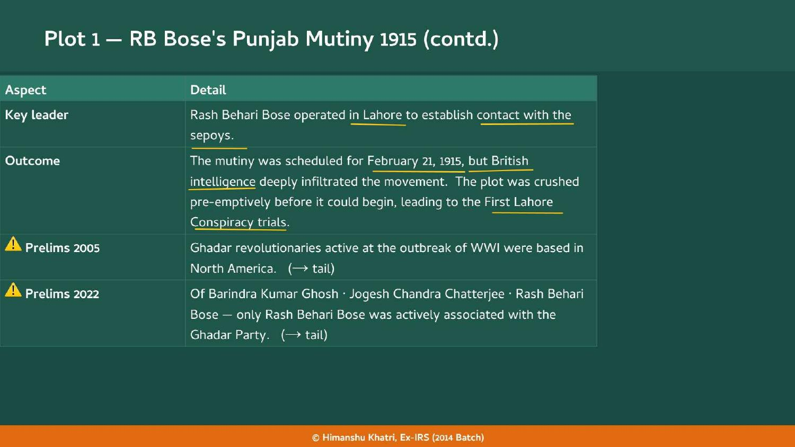
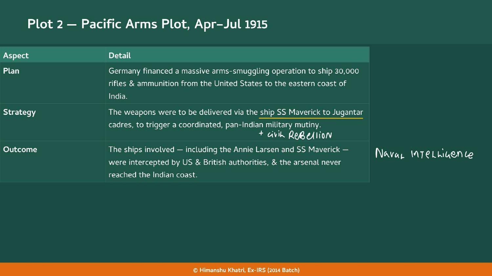
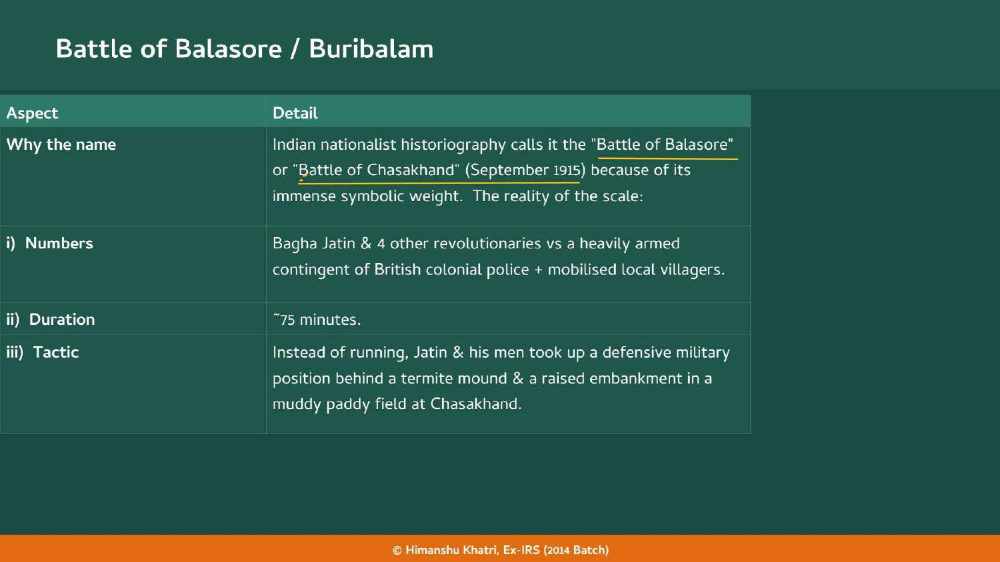
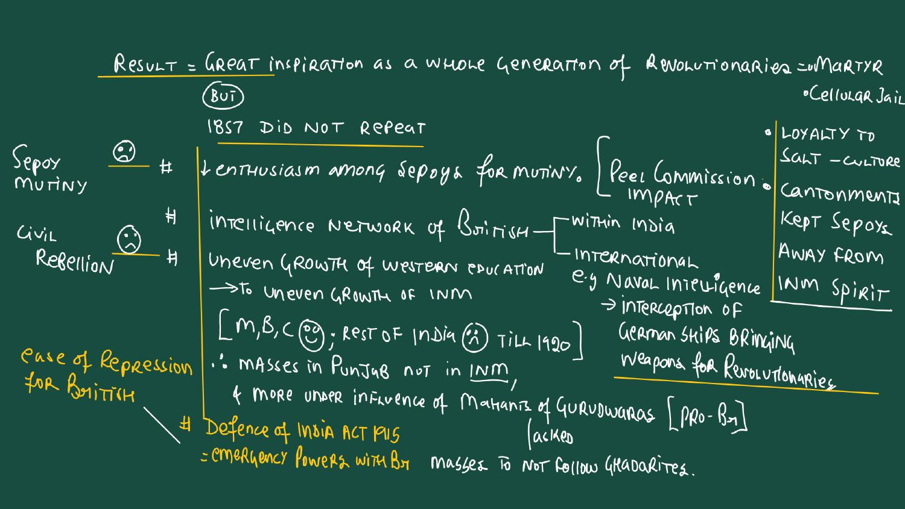
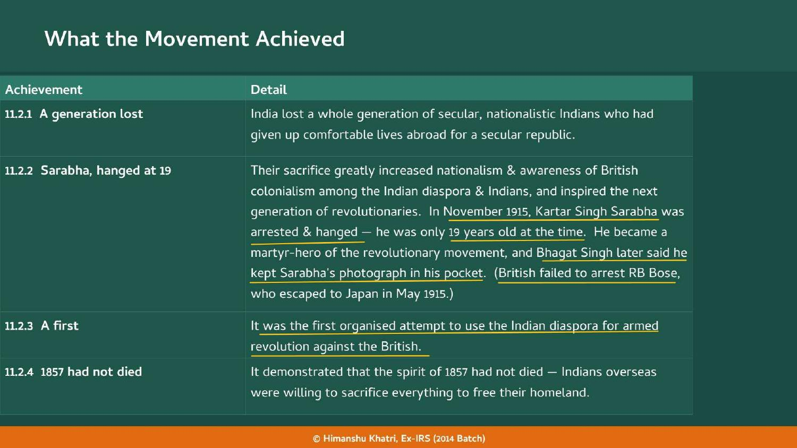
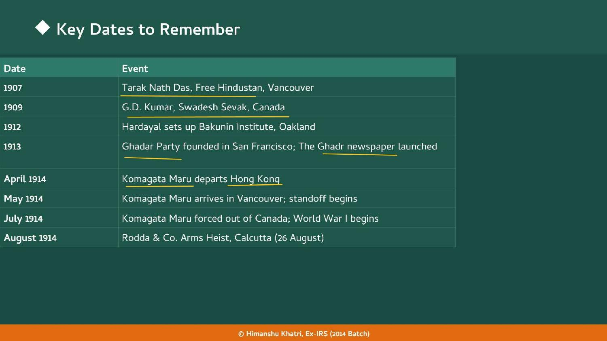
| Year | What happened |
|---|---|
| 1783 | Treaty of Paris: US-Britain perpetual friendship (used to bar Indians from land) |
| 1906 | Jugantar Party set up by B.K. Ghosh; Barisal repression and Yugantar call |
| 1907 | Tarak Nath Das, Free Hindustan, Vancouver ★ |
| 1908 | Canada restricts entry to direct journey from India ★ |
| 1909 | G.D. Kumar, Swadesh Sevak, Canada ★ |
| 1912 | Delhi Conspiracy Case (Hardinge 10-16 targeted); Hardayal founds Bakunin Institute ★ |
| 1913 | Ghadar Party founded in San Francisco; The Ghadr launched ★ |
| Apr 1914 | Komagata Maru departs Hong Kong ★ |
| May 1914 | Komagata Maru reaches Vancouver; standoff begins |
| Jul 1914 | Ship forced out of Canada; WWI begins (28 July) ★ |
| Aug 1914 | Rodda & Co. arms heist, Calcutta ★ |
| Sep 1914 | Budge Budge Riot; Ghadarites start returning to India ★ |
| Late 1914 | British pre-emptive strikes begin |
| 21 Feb 1915 | Planned Punjab mutiny fails ★ |
| Mar 1915 | Defence of India Act used to crush the movement ★ |
| Apr-Sep 1915 | First Lahore Conspiracy Case trials ★ |
| Apr-Jul 1915 | Pacific arms plot intercepted |
| May 1915 | RB Bose escapes to Japan |
| Sep 1915 | Battle of Balasore (Buribalam / Chasakhand); Bagha Jatin martyred ★ |
| Nov 1915 | Kartar Singh Sarabha executed at 19 ★ |
| Dec 1915 | Christmas Day plot collapses |
Swadeshi's revolutionary strand inspired Ghadar; the Delhi Conspiracy Case 1912 was the model deed
Jugantar, Alipore Case 1908 and Bengal networks feed the Rodda heist and Bagha Jatin
Ghadar's H-M-S unity contrasts with the rise of separate communal politics
The next phase after Ghadar's failure: constitutional pressure under war conditions
Wartime repression and reforms; the Defence of India Act leads to the Rowlatt Acts 1919
Rowlatt Acts continued emergency powers after WWI, the Gandhian response
Ghadar survivors joined Kisan Sabhas
Bhagat Singh and HSRA, Second Lahore Case 1929-30, Kakori 1925: the later generation
Ghadar's goal was to repeat 1857; Punjabis' loyalty in 1857 criticised
Sikh background of the NRI rank-and-file; Punjab as recruiting ground
Read the question, answer in your head, then tap to check.
| What was the goal of the Ghadar Movement? | Repeat 1857: a sepoy mutiny plus civil rebellion to set up a secular Republic of India (Purna Swaraj). |
| Who made up the Ghadar Movement? | Punjabi NRIs from the US and Canada plus Bengal revolutionaries. |
| What was the two-stage method? | Stage one a press campaign abroad; stage two return to India and start a 1857-style revolt. |
| Which case was the Swadeshi-era inspiration? | The Delhi Conspiracy Case 1912, targeting Viceroy Hardinge 10-16. |
| What was Canada's immigration rule? | Entry only for Indians making a direct journey from India (since 1908). |
| Why did the US bar Indians from land? | Racism and the 1783 Treaty of Paris perpetual friendship between the US and Britain. |
| What irony did Tarak Nath Das highlight? | Britain sent Indians as plantation labourers to Fiji but barred their entry to North America (Free Hindustan, 1907). |
| What was Swadesh Sevak? | Gurmukhi weekly of G.D. Kumar in Canada, 1909, asking Indian troops to revolt. |
| Who was 1st President of the Ghadar Party? | Sohan Singh Bhakna, not Hardayal. |
| What was the Ghadar HQ called? | Yugantar Ashram, San Francisco. |
| Who set up the weekly The Ghadr? | Lala Hardayal, professor of Sanskrit and Indian philosophy, 1913. |
| What did the front page of The Ghadr carry? | Angrezi Raj ka kachcha Chithha, an exposé of British imperialism. |
| What was the Ghadr's final call? | 31 crore Indians should rise against 1.2 lakh British and repeat 1857. |
| What is propaganda of the deed? | Acts, including violence and mutiny, awaken the masses more than words; words educate, acts ignite. |
| Who was Bakunin? | Russian founder of anarchism (1814-76): the State is oppression, destroy it. |
| Who chartered the Komagata Maru and how many passengers? | Baba Gurdit Singh; 376 passengers, mostly Punjabi Sikhs. |
| Give the Komagata Maru route and dates. | Hong Kong (Apr 1914), Vancouver (May), forced out (Jul), Budge Budge near Calcutta (Sep). |
| What happened at Budge Budge? | Passengers resisted a forced special train to Punjab; police fired and about 20 were killed. |
| What was Bagha Jatin's cry? | Amra morbo, jagat jagbe: we shall die to awaken the nation. |
| What did the Rodda heist take? | 50 Mauser C96 pistols and 46,000 rounds from the 7th of 7 bullock carts of 202 crates. |
| Who were the Rodda insiders? | Shrish Chandra Mitra (employee) and Haridas Datta (disguised cart driver); Mitra was never captured. |
| Name the three plots. | RB Bose's Punjab mutiny (21 Feb 1915); Pacific arms plot (Apr-Jul 1915); Christmas Day plot (Dec 1915). |
| What was the Pacific arms plot? | 30,000 German-funded rifles from the US via the SS Maverick (also Annie Larsen); intercepted. |
| Name the five at Balasore. | Bagha Jatin, Chittapriya Ray Chaudhuri, Manoranjan Sengupta, Niren Dasgupta, Jyotish Pal. |
| How long was the Balasore fight and where? | About 75 minutes, at Chasakhand near the Burhabalanga river, behind a termite mound. |
| What law suppressed Ghadarites in March 1915? | The Defence of India Act, 1915: detention without trial, special tribunals, no appeal. |
| Which trial crushed Ghadar in India? | The First Lahore Conspiracy Case, Apr-Sep 1915 (not the Second, 1929-30). |
| Why did the Mahants matter? | Udasi Sikh Mahants were pro-British and told the masses not to follow the Ghadarites. |
| Who was Kartar Singh Sarabha? | Hanged in Nov 1915 at 19; Bhagat Singh kept his photograph. |
| Where did RB Bose go in May 1915? | He escaped to Japan; the British failed to arrest him. |
| Where were Ghadarites based at WWI's outbreak? | North America (Prelims 2005). |
Tap the card to flip.